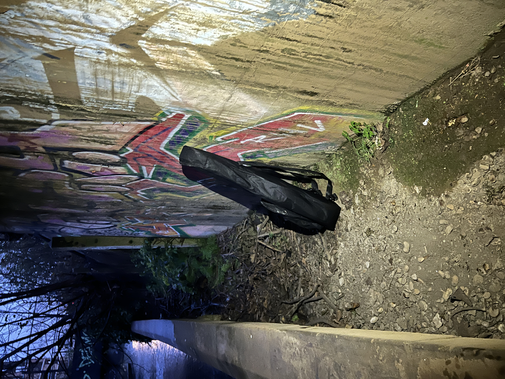

Newisham is famous for it's beautiful infrastrcture, feel free to take a look! :)
,
home

Newisham mysterious street guitar has been established
with the councils mysterious object funding won in June this year
Is said to give residents who touch it the power to win eurovision
previously used by OASIS